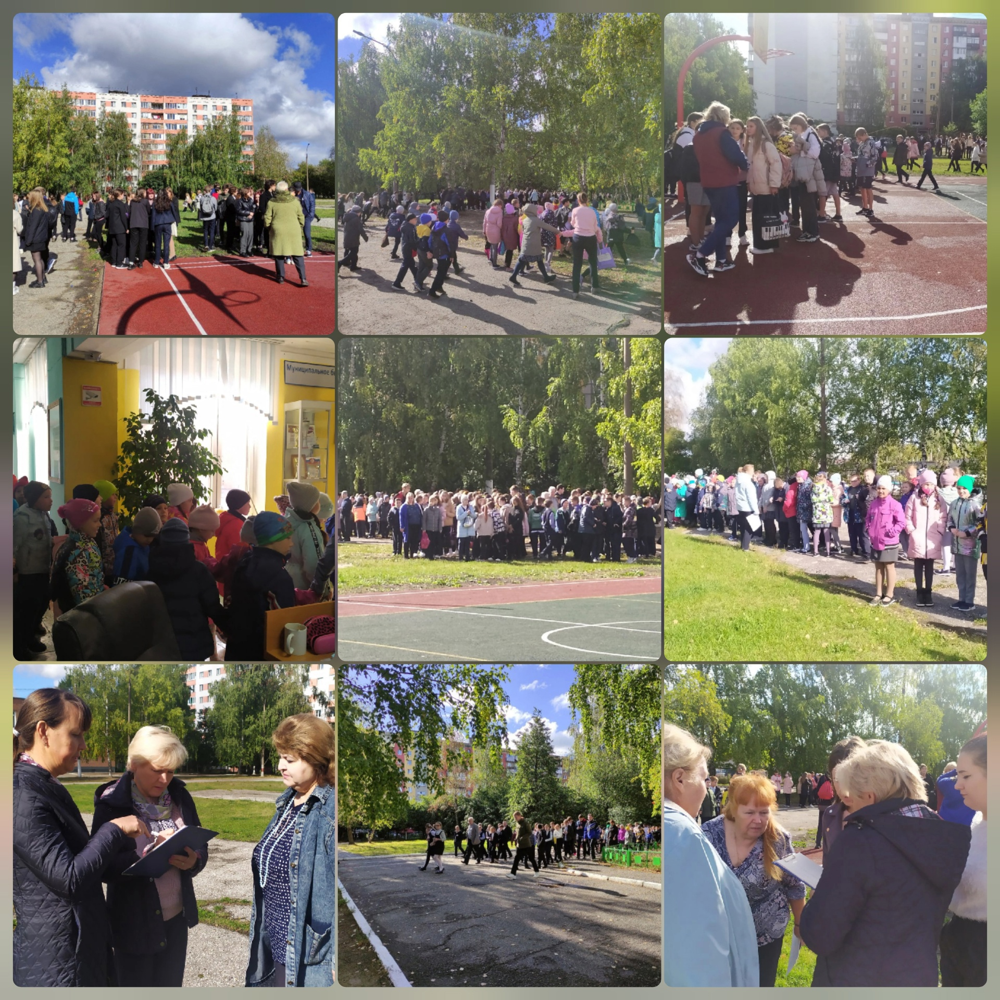

Портфолио


Эвакуация в школе — перемещение детей в безопасное место происходит при возникновении любых чрезвычайных ситуаций. Например пожар. Как не потерять спокойствие и действовать при эвакуации грамотно? Это должны знать все. Школьники и их родители — прежде всего.
Эвакуация в школе — перемещение детей в безопасное место происходит при возникновении любых чрезвычайных ситуаций. Например пожар. Как не потерять спокойствие и действовать при эвакуации грамотно? Это должны знать все. Школьники и их родители — прежде всего.
В случае чрезвычайной опасности действия и педагогов, и обучающихся должны быть четко отработаны. Именно для этого ежегодно проводятся мероприятия, которые позволяют посмотреть на слаженную работу педагогов и обучающихся.
В случае чрезвычайной опасности действия и педагогов, и обучающихся должны быть четко отработаны. Именно для этого ежегодно проводятся мероприятия, которые позволяют посмотреть на слаженную работу педагогов и обучающихся.